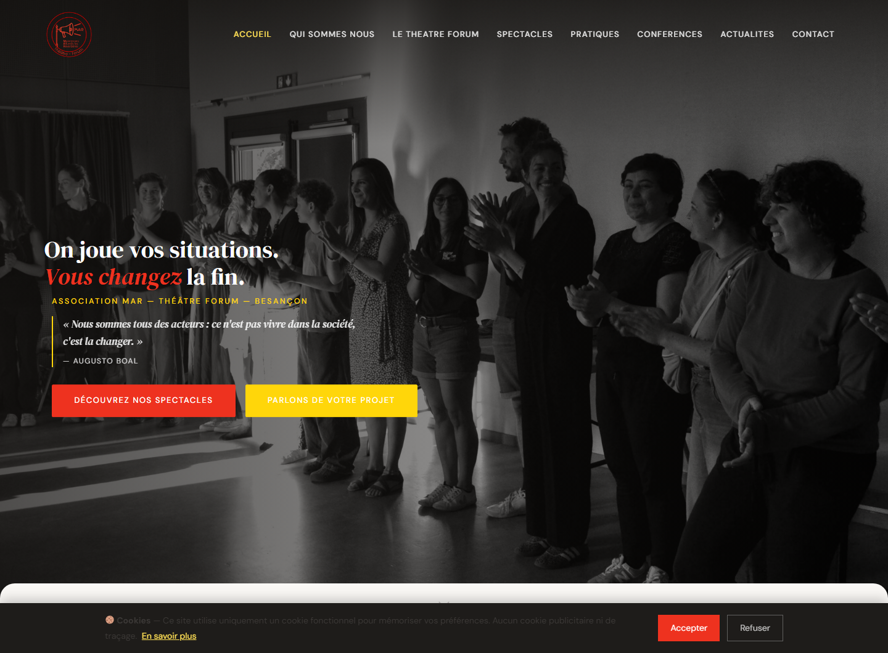
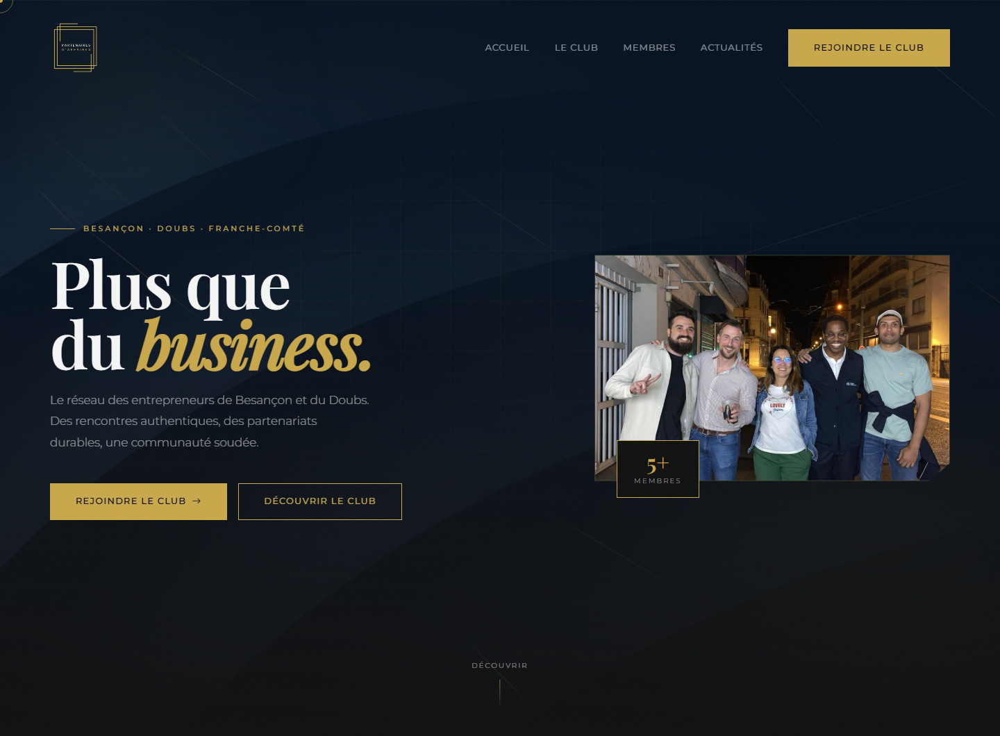
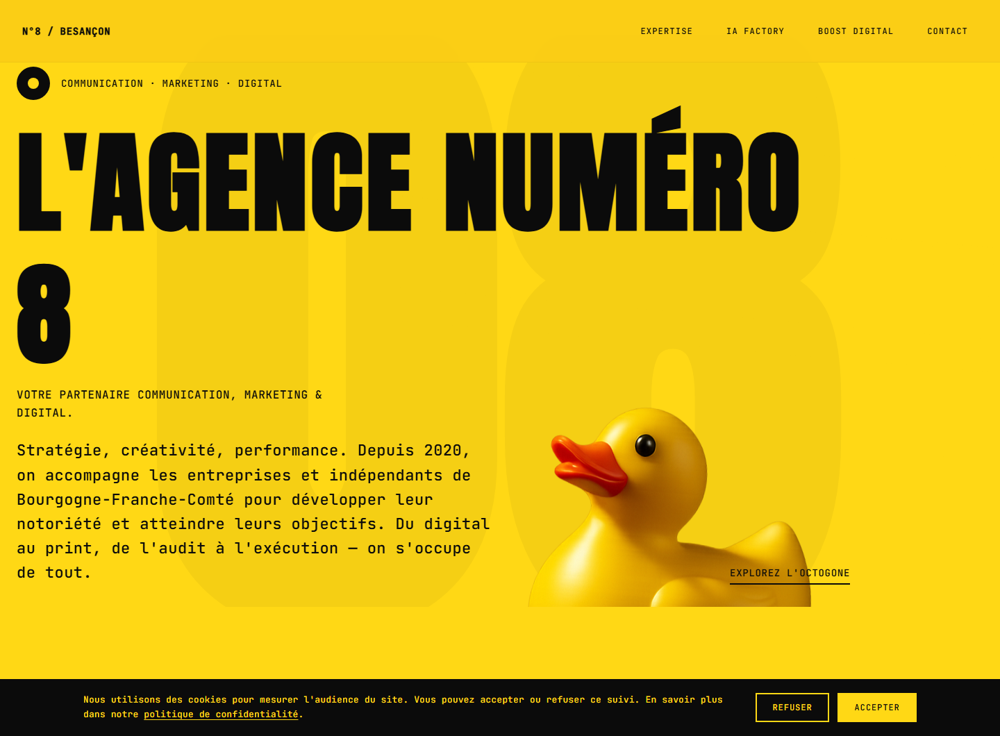
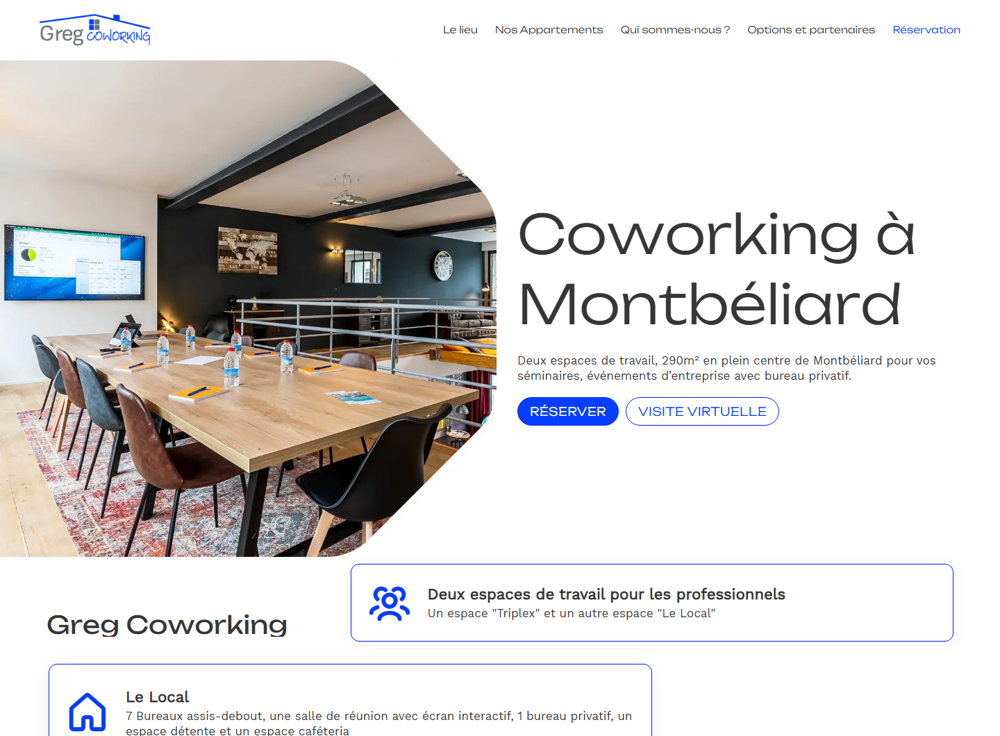
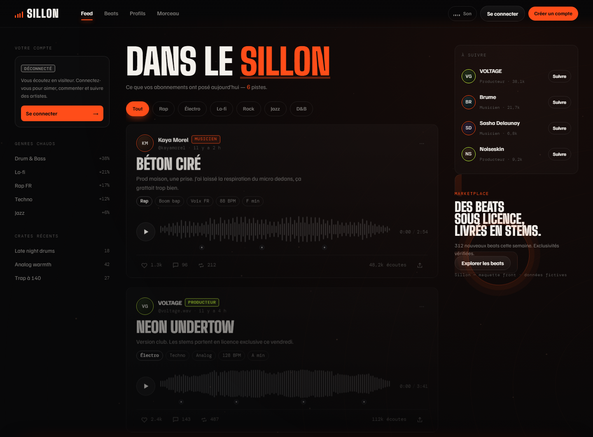
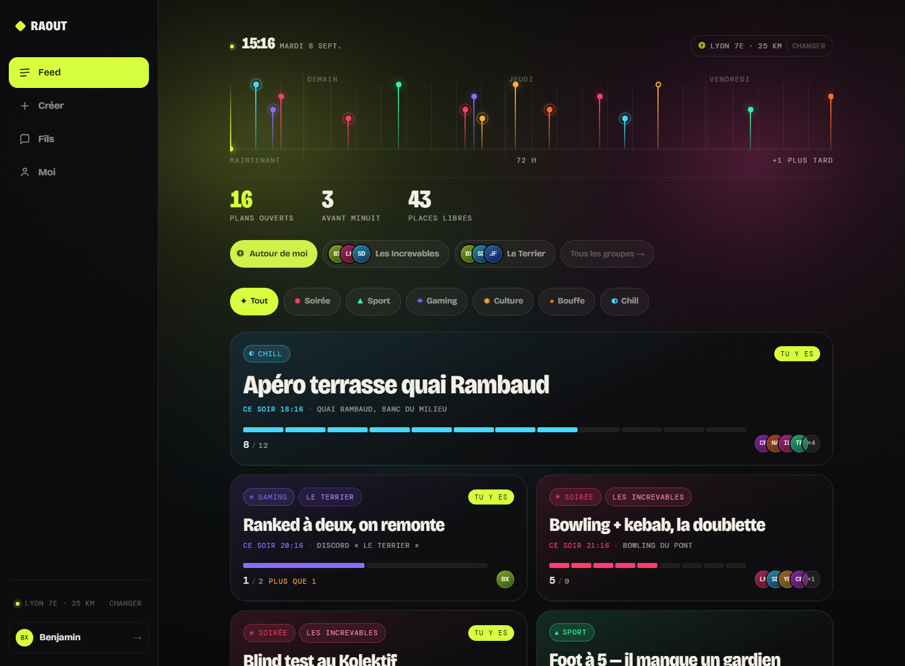

Site WordPress sur-mesure
Thème écrit à la main, pas de gabarit acheté, pas d'empilement d'extensions.
- Thème custom — PHP, ACF, types de contenu dédiés
- Plugins métier séparés, un rôle par plugin
- Back-office pensé pour non-techniciens
Bavans, Doubs — et à distance
Faites défiler
01 Compétences
Trois domaines. Dans les trois, je livre un code qu'un autre développeur peut reprendre sans me demander.
Thème écrit à la main, pas de gabarit acheté, pas d'empilement d'extensions.
Quand un site vitrine ne suffit plus : espace membre, tableau de bord, logique métier.
Une maquette, un PDF, un site vieillissant — j'en fais des pages propres et rapides.
02 Projets
Quatre sites clients en ligne. Deux projets personnels en cours.
6 projets

Compagnie de théâtre forum à Besançon. Thème WordPress custom et quatre plugins PHP maison : 17 spectacles et 7 comédiens gérés par l'association seule.
Quatre plugins, quatre domaines, aucun recouvrement. Trois types de contenu dédiés et des champs ACF permettent à l'association de tout publier sans jamais toucher une ligne de code — ni m'appeler.
mar-spectacles tient le répertoire : 17 créations depuis
2023, présentées en cards avec image, titre et accroche, et surtout
filtrables par public — adultes, entreprise & pro, famille, jeunesse. Un
programmateur qui cherche un spectacle jeunesse le trouve en un clic au lieu de faire
défiler dix-sept fiches. Chaque spectacle a sa page de détail via « Lire le pitch ».
mar-troupe gère les sept comédiens et intervenantes : photo,
nom, rôle et biographie, modifiables depuis le back-office. Dans une compagnie, l'équipe
bouge ; il n'était pas question qu'un changement de photo passe par un développeur.
mar-actu alimente le fil d'actualités, classé par catégories, et
mar-contact gère les demandes. S'ajoute le plugin d'édition qui rend
les textes du site modifiables par l'association, comme sur mes autres projets.
Le site existait en version statique : j'ai mené la migration vers WordPress sans perte de contenu. Hébergé chez IONOS.

Réseau d'entrepreneurs. Thème WordPress custom et surtout un plugin d'administration sur-mesure : badges dorés et prévisualisation vidéo en direct.
Un club d'entrepreneurs de Besançon et du Doubs. Le site tient sur cinq espaces — accueil, présentation du club, annuaire des membres, fil d'actualités et parcours d'adhésion — le tout articulé autour d'une promesse simple : un cercle de confiance, des opportunités commerciales, de la convivialité.
L'annuaire est le cœur du dispositif. Chaque membre y dispose d'une fiche, et le système de badges dorés que j'ai développé permet à l'administrateur de distinguer certains profils sans toucher au code. Le fil d'actualités reçoit les comptes-rendus d'événements — déjeuners, soirées réseau — publiés par le club lui-même.
Le morceau technique, c'est la prévisualisation vidéo en temps réel dans le back-office : l'administrateur voit le rendu de la vidéo pendant qu'il saisit, au lieu de publier puis d'aller vérifier sur le site. Une boucle de correction en quelques secondes plutôt qu'en plusieurs allers-retours.
Thème développé à la main, pas de gabarit acheté. J'ai également pris en charge la mise en ligne et l'hébergement chez Hostinger.

Agence de communication à Besançon. Site complet, avec deux plugins sur-mesure : l'un pour que l'agence modifie ses textes elle-même, l'autre pour le formulaire de contact.
Le contenu s'organise autour des huit pôles de l'agence — audit, stratégie, mass médias, sites web, réseaux sociaux, print, événementiel — et met en avant les offres IA Factory et Boost Digital.
La difficulté d'un tel site, c'est le volume : huit domaines à présenter sans que le visiteur se perde, plus les certifications de l'agence (Qualiopi, Pôle Numérique BFC, éligibilité CPF) qui doivent rester visibles sans encombrer. La navigation a donc été resserrée sur quatre entrées, et chaque pôle est traité comme un bloc autonome.
Premier plugin : l'édition de contenu. Une agence de communication écrit et réécrit ses textes en permanence. Plutôt que de me faire rappeler à chaque virgule, j'ai donné à l'équipe la main sur ses propres contenus depuis le back-office : elle publie ses changements sans développeur, et sans pouvoir casser la mise en page — les zones modifiables sont délimitées.
Second plugin : le formulaire de contact. Écrit sur-mesure plutôt qu'emprunté à une extension du marché. C'est le point d'entrée commercial du site : autant qu'il soit sous contrôle, sans réglages superflus ni code tiers embarqué.

Espace de coworking à Montbéliard. Page Tarifs créée de A à Z, et
gregblog, le plugin qui fait tourner le blog.
Un PDF de tarifs et une image de services au départ ; en sortie, des cards HTML/CSS autonomes — CSS scopé, SVG inline, aucun framework — intégrées dans Bricks. La page compare quatre formules sur quatre durées, économies affichées.
gregblog est découpé par responsabilité — cpt.php,
taxonomy.php, acf-fields.php — au lieu d'un
functions.php de mille lignes. Reprenable par n'importe qui.
gregblog, modifications, maintenance
Réseau social audio-first pour musiciens : le son passe avant l'image. Interface complète en vanilla, sans framework.
Fil audio en trois colonnes, page morceau, profil, publication, place de marché — avec une typographie et un rythme éditorial assumés. Un terrain d'essai pour des interfaces denses qui restent lisibles.

Sorties entre amis : un plan créé en vingt secondes, les potes s'inscrivent en un clic. Premier arrivé, premier servi.
Routeur par hash, plusieurs écrans (fil, détail, création, profil, groupes), gestion de groupes et périmètre géographique réglable. La frise des 72 heures à venir affiche chaque plan à son heure exacte.
Captures prises sur les sites en ligne. Sillon et RAOUT étant en cours de développement, leurs visuels évolueront encore.
03 Stack
Peu d'outils, bien connus. Le vanilla reste la base : tout le reste s'y ramène.
04 Méthode
Quatre étapes, un cadrage écrit, aucune surprise à la livraison.
Un appel ou un café, pour comprendre le besoin réel derrière la demande.
Ce qui est inclus, ce qui ne l'est pas, le délai. Posé avant d'écrire la première ligne.
Vous suivez l'avancement sur une adresse de test. Personne ne découvre le résultat à la fin.
Hébergement, domaine, sauvegardes. Puis je vous montre comment faire sans moi.
05 À propos
Certifié DWWM, en micro-entreprise, attaché au code lisible.
J'écris du code que je peux relire dans six mois. C'est à peu près tout ce qu'il y a à savoir sur ma façon de travailler.
Concrètement : des thèmes sans page builder, des plugins découpés par domaine plutôt qu'un fichier de mille lignes, et des interfaces qui fonctionnent au clavier avant de fonctionner à la souris.
Certifié Développeur Web et Web Mobile (RNCP 37674), installé en micro-entreprise à Bavans. Je travaille dans le secteur Montbéliard-Belfort comme à distance.
06 Contact
Trois lignes suffisent. Je réponds sous 48 h — même pour dire non.
Formulaire de contact à brancher : cette maquette n'a pas de serveur, les liens ouvrent votre logiciel de messagerie.